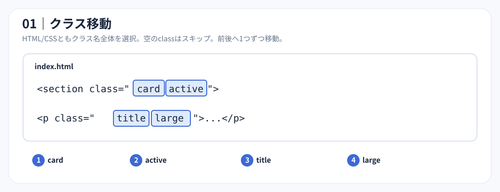
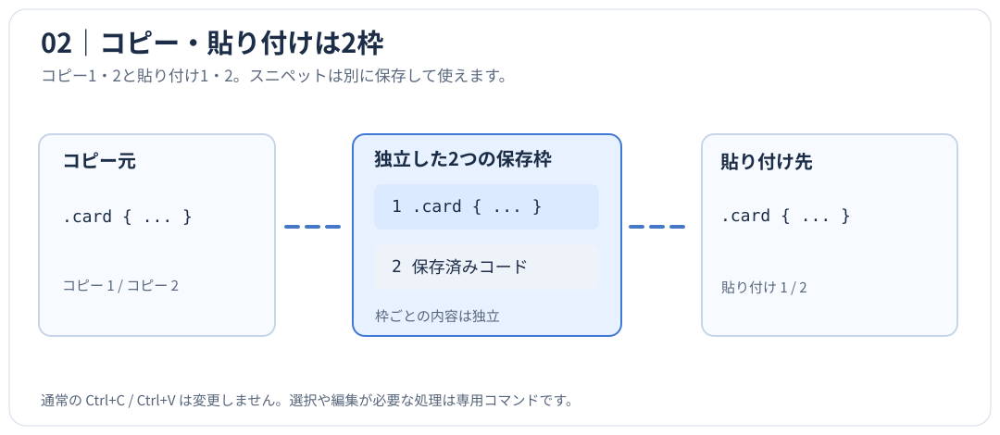
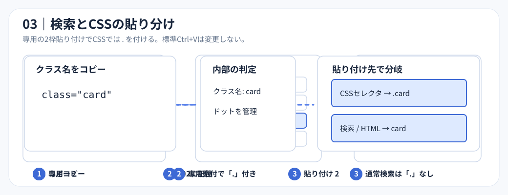
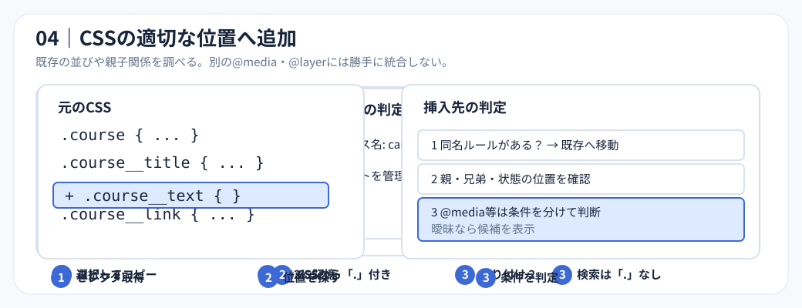
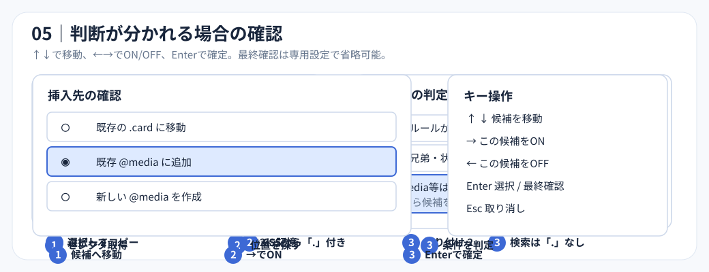
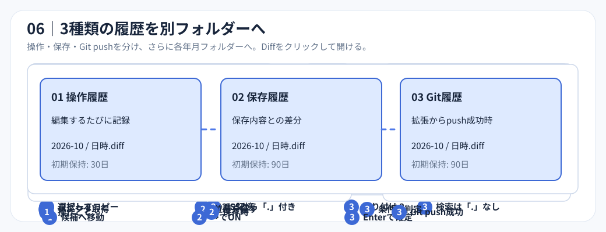
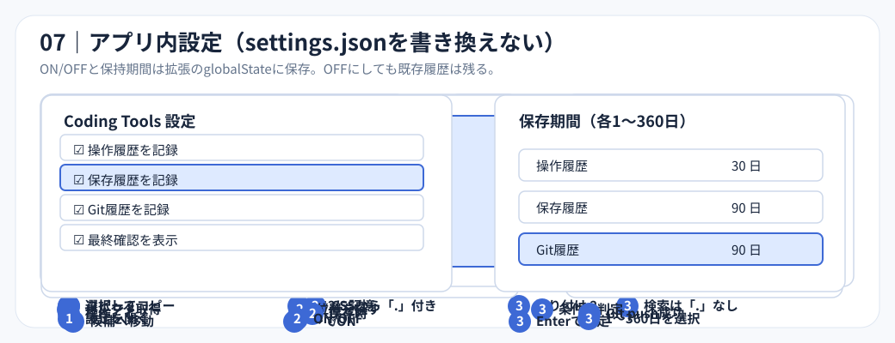
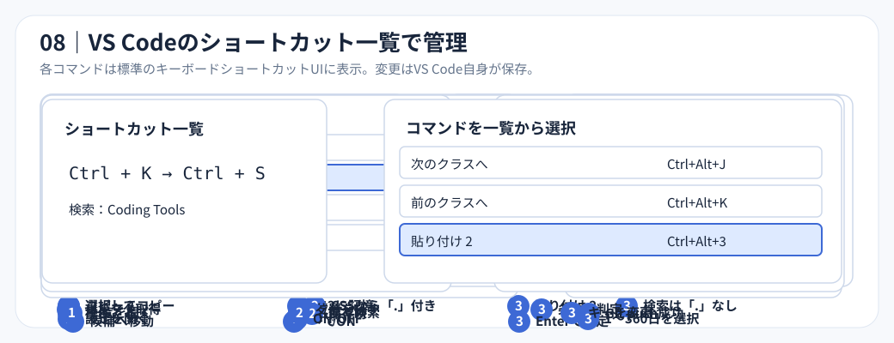
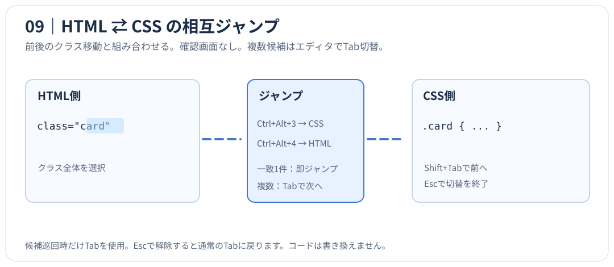

01 クラス移動・追加選択
HTMLでは class="card active" を card → active と1語ずつ選択。空の class="" は無視。CSSではクラスセレクタを対象にし、複数選択は追加選択コマンドで行います。

このSVGを単独で開く02 2枠コピー・貼り付け
保存枠1〜2を個別にコピー・貼り付け。1つの内容を貼っても他の枠は書き換えられません。

このSVGを単独で開く03 クラスのスマート貼り付け
専用の番号付きコピペやスマート貼り付けでは、CSSエディタでドット付き・HTMLでドットなしを扱います。標準のCtrl+C / Ctrl+Vは変更しません。コピーしただけでは差分履歴を記録しません。

このSVGを単独で開く04 CSS配置判断
既存セレクタと前後の関連ルール、メディアクエリを確認し、判断が分かれるときだけ候補を表示。勝手に既存ルールを並べ替えません。

このSVGを単独で開く05 候補の操作
↑↓で項目移動、→でON、←でOFF、Enterで確定、Escで中止。最終確認の二段目だけ設定でON/OFF可能です。

このSVGを単独で開く06 操作・保存・Gitの3つの履歴
拡張操作、ファイル保存、拡張経由のGit pushのログをそれぞれ年月フォルダーに記録。履歴画面からDiffと元ファイルを開けます。通常のGit pushは自動捕捉しません。

このSVGを単独で開く07 JSONを汚さない内部設定
記録ON/OFF、最終確認ON/OFF、各ログの保持期間（1〜360日）はglobalStateに保存。ユーザーの settings.json を編集しません。

このSVGを単独で開く08 キーボードショートカット一覧
VS Codeの「キーボード ショートカット」からCoding Toolsで検索し、各コマンドの割り当てを変更できます。ショートカット変更はVS Code標準の keybindings.json に保存されます。

このSVGを単独で開く09 HTML ⇄ CSS相互ジャンプ
HTMLで選択したクラスのCSS定義にCtrl+Alt+3でジャンプ。CSSからはCtrl+Alt+4でHTMLの使用箇所へ。複数候補でも確認画面を出さず、前後のクラスを参考に最初の候補へ直接ジャンプ。Tabで次、Shift+Tabで前、Escで終了。ジャンプでコードは変更しません。

このSVGを単独で開く